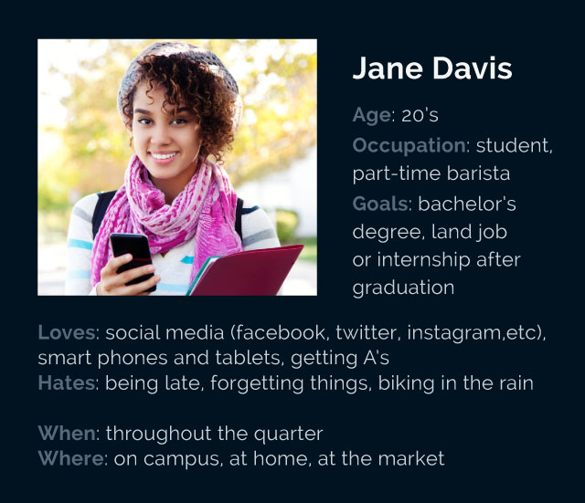

The goal of this project is to help our users reach their goals whether it's doing well in a class or losing 5 pounds. This project is all about providing a one-stop-shop for all the information they may need to accomplish that task or goal. A main feature of this project will be it's customization opportunities. User's will be able to personalize their main and individual project pages however they like using colors, patterns, pictures, premade themes and even fun stickers.
Possible users of this project can range from ambitious teenagers to middle-aged professionals, because the interface can be as playful as one wants it to be but at its core is a organizing and planning machine. The targeted audience likes technology and all the programs and applications available for their personal computers and phones. They already like to use apps on their iPhones like reminders, notes, and calendars, but wish they didn't have to switch back and forth between apps to view all the information. They will use our project to organize all the information in one interface that they love and cherish because they have customized it to their own liking.
The goal of this project is to help anyone who may have a bit much on their plate and needs some help staying on top of everything. Full customization is desired because that will become a driving force for the users to keep using the project. The more they personalize it, the more attached they will be to it. Ideally the project will become a mobile application so that the program itself can send out alerts to the users phones, but I don't know how to make an app so that is a limitation. The other path would be to take this project and apply it as a re-design of the landing pages of sites students of UC Davis already use, like smartsite or myucdavis, but I would think that Davis offices wouldn't want to mess with those sites.
There will be an introductory interactive tutorial when a user first opens the program. Communication will then continue through email updates. The most important message from us to the audience will be that this project was made for them because us, the makers, are them. We want fun organization and planning just as they do. Communication should always be fun and friendly.
The look and feel of the interface will all depend on the user. Everything will be customizable. User's will be able to change colors or patters of each and every widget they choose to use or use pre-made themes that will be developed by us or possibly from a library of user-made themes. User's will be able to drag and drop widgets to compose their workspaces the way they like and they will be able to choose from a variety of fonts.
Stay on top of life, your way.